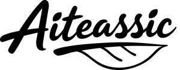

Trade Mark Journal No.2025/039 26 September 2025
UK00004264709 16 September 2025 (5,7,9,11,21,29,30,32,35,42,43)

- Class 5
- Vitamin and mineral supplements; Homeopathic supplements; Medicated mouthwash; Vitamin and mineral preparations; Dietetic foods for medicinal purposes; Dietary fiber to aid digestion; Dietetic foodstuffs for medical purposes; Slimming tea for medical purposes; Dietary and nutritional preparations; Nutritional supplements; Mineral nutritional supplements; Vitamin drinks; Chinese traditional medicinal herbs; Medicinal tea; Herbal supplements; Dietary supplements for humans; Dietary fibre; Medicinal herbs; Tonics for medical use; Vitamin and mineral food supplements.
- Class 7
- Tea leaf pickers [machines]; Machines for harvesting tea leaves; Tea leaves sorting machines; Tea processing machines; Coffee extracting machines; Coffee grinders, other than hand-operated; Mixers [kitchen machines]; Electric blenders; Kitchen machines, electric; Crushers for kitchen use, electric; Fruit juice extractors (Electric -); Noodle making machines; Electric juicers; Wrapping machines; Seaming machines; Sweeping machines; Printing presses; Electric bag sealers; Electric domestic vacuum cleaners; Meat cutters [electric machines].
- Class 9
- Application software for mobile devices; Facial recognition apparatus; Multiprocessor chips; Eyeglasses; Galvanic cells; Home remote controls; Power connectors; Remote monitoring apparatus; Multimedia terminals; Social software; Smartphone software; Resistors; Display screens; Training software; Enterprise software; Smoke detection apparatus; Computers; Electronic magazines; Optical electronic components; Encoded cards for use in relation to the electronic transfer of funds.
- Class 11
- Electric coffee roasters; Electric coffee making machines; Refillable coffee capsules; Tea kettles, electric; Installations for water purification; Air purification installations; Chilled purified water dispensers; Water dispensers; Sanitising apparatus; Microwave ovens; Air conditioners; Ice cube making machines; Cooking appliances; Kitchen stoves; Appliances for cooking; Home bread makers; Ice chests; Electric wine coolers; Electric deep fryers; Apparatus for heating foodstuffs.
- Class 21
- Juice squeezers; Tea sets; Tea kettles [non-electric]; Mugs of china; Wine glasses; Wine jugs; Glass holders; Works of art made of earthenware; Spoons (Basting -), for kitchen use; Candlesticks; Kitchen utensils, not of precious metal; Napkin holders; Pasta makers, hand-operated; Chinaware; Mess-tins; Reamers for fruit juice; Squeegees for dishes; Works of art made of glass; Drinking receptacles; Ceramic tableware.
- Class 29
- Prepared nuts; Hamburgers; Bouillon; Fresh meat; Buttercream; Chicken pieces; Frozen fruits; Fruit preserves; Frozen poultry; Dried fruit-based snacks; Fruit pulp; Vegetable salads; Fruit spreads; Seafood products; Cooking oils; Yogurt-based beverages; Milk-based beverages flavored with chocolate; Dried truffles [edible fungi]; Preserved vegetables (in oil); Chips (Fruit -).
- Class 30
- Coffee; Beverages made of tea; Tea cakes; Tea; Chocolatines; Honeys; Pastries; Pizzas; Cakes; Cereal snacks; Pasta; Ice cream; Starch for food; Condiments; Pepper sauces; Candies (Non-medicated -); Nachos; Coffee beverages; Chinese rice noodles (bifun, uncooked); Gum paste.
- Class 32
- Soft drinks for energy supply; Coconut water as beverage; Lemonade; Mixed fruit juices; Fruit-based beverages; Coconut juice; Mineral water [beverages]; Kvass; Powders for effervescing beverages; Fruit juice; Beer; Cola drinks; Soda water; Concentrated fruit juices; Mineral waters; Drinking waters; Glacial water; Cocktails, non-alcoholic; Smoothies; Vegetable juice.
- Class 35
- Advertising; Commercial administration of the licensing of the goods and services of others; Sales administration; Dissemination of advertisements via the Internet; Search engine optimisation for sales promotion; Accounting; Promoting the goods and services of others by arranging for sponsors to affiliate their goods and services with sporting activities; Administering medication reimbursement programs and services; Retail services in relation to pharmaceutical preparations; Business advice relating to franchising; Business management of restaurants; On-line ordering services in the field of restaurant take-out and delivery; Import and export agencies services; Database management services; Arranging business introductions; Organisation of trade fairs; Personnel recruitment; Pricing surveys; On-line auctioneering; Business management of retail outlets.
- Class 42
- Providing information in the field of product development; Research and consultancy services relating to computer software; Software design; Web site design services; Design of printed matter; Software development, programming and implementation; Updating and maintenance of computer software and programs; Designing and developing web pages; Product development; Hosting of platforms on the Internet; Research and development services; Technical consultancy in relation to research services relating to foods and dietary supplements; Product development for others; Product design services; Industrial research; Design of packaging; Consultancy with regard to webpage design; Kitchen design; Research on food; Evaluation of product development.
- Class 43
- Providing lodging information via the Internet; Reservation of restaurants; Ice cream parlors; Juice bars; Cafe services; Hotels and motels; Take-away food and drink services; Outside catering; Rental of popcorn poppers; Houses (Boarding -); Rental of drinking water dispensers; Restaurants; Food preparation for others on an outsourcing basis; Rental of water dispensers; Rental of dishes; Bartending services; Tapas bars; Food preparation; Room rental for exhibitions; Food sculpting.
Zhejiang Hengju Life Technology Co., Ltd
Representative: BEST IP LTD